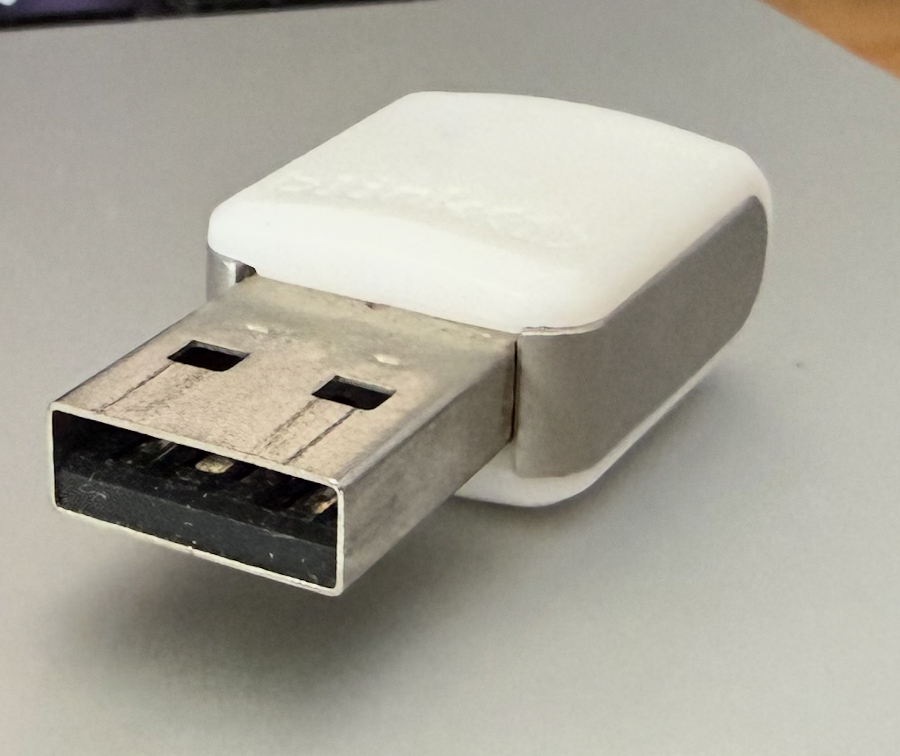
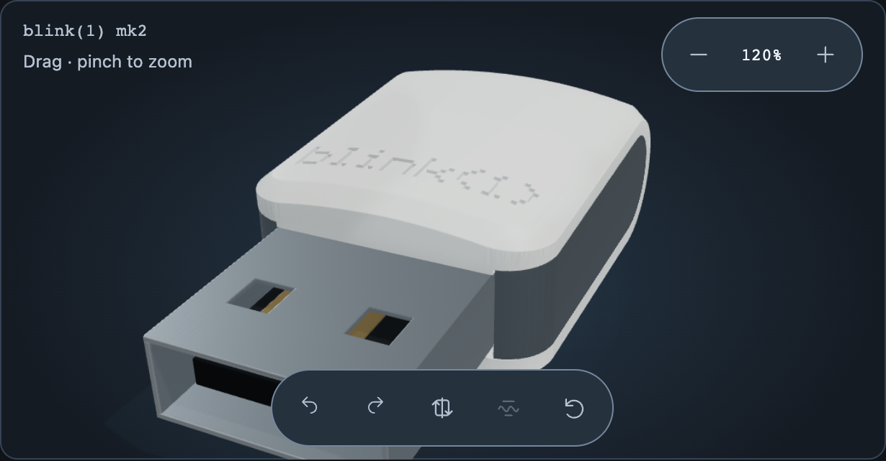
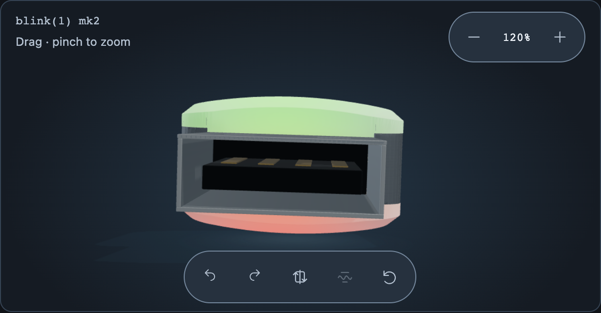
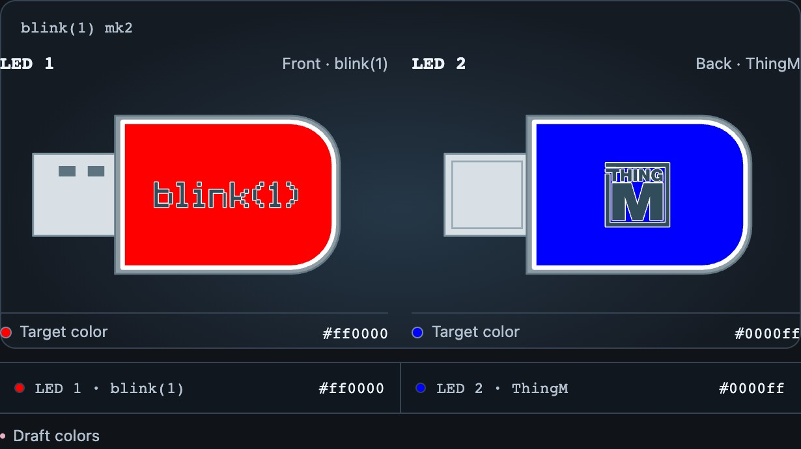

Physical reference
The metal and frosted plastic meet smoothly around the corners.

 nb1Nightlab / Model referenceInteractive model ↗
nb1Nightlab / Model referenceInteractive model ↗REVIEWED REFERENCE · 2026-11-15
LED 1 is the blink(1) wordmark face; LED 2 is the ThingM face. The USB opening faces blink(1), and its black tongue faces ThingM. Camera rotation never swaps the LED identities.
The metal and frosted plastic meet smoothly around the corners.

The unlit quarter view shows the visible joint. The original plastic geometry and wordmarks are preserved.

Front and side occlusion were checked to keep internal metal behind the plastic surface. The reference records six poses, lit and unlit.

Both fixed faces remain visible while loading, without WebGL, and after context loss. Off and unspecified have distinct labels. Screen playback remains available.

Continuous additive two-source light, independent diagnostic values, the actual Go playback plan, bounded zoom, ordinary scrolling, keyboard access, and reduced motion. Model captions keep safe insets and avoid the zoom controls.
Reference poses and screenshots · Derived joint checks · Historical physical LED identification
Official raw STL files are pinned to commit 101abe3599c661c4dd4d1204b4d50fb592293143. Their bytes are preserved. The display assembly, supplemental USB geometry, and light field are visual approximations, not manufacturing or optical calibration files.
Sources and modifications · ThingM CAD CC-BY-SA-4.0 · Three.js MIT